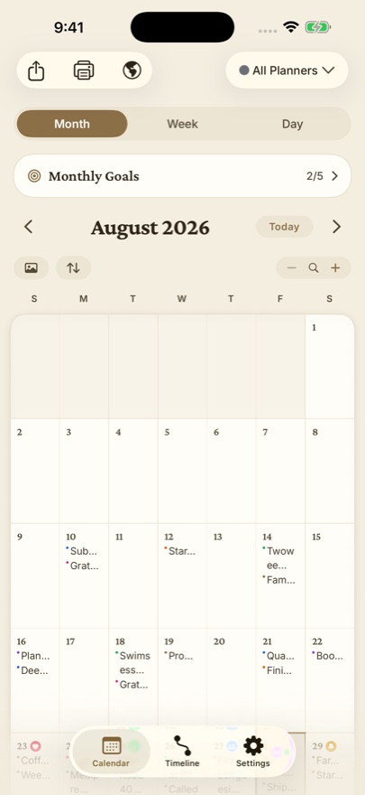
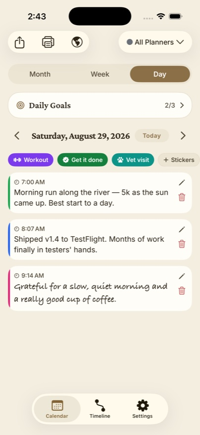

ひとことで言うと
Dayleaf は、カレンダーを中心にした手帳アプリであり日記アプリです。紙の手帳のように使える日記アプリ、と覚えてください。日記、写真、ステッカー、目標がその日のマスに並ぶので、2027年のひと月ひと月が、紙の手帳と同じように少しずつ埋まっていきます。予定を立てるのも、振り返るのも一冊で済ませたい方、一言日記を無理なく続けたい方に向いています。iPhone、iPad、Mac、Apple Watch、Android に対応。無料で始められて記録数は無制限、Pro は買い切り（または年額プラン）です。

月・週・日。紙の手帳と同じ3つのページ
アプリを開くと、白紙のページではなくカレンダーが現れます。月表示ではマスの中に書いた内容のプレビューが見え、週表示では一日ごとにカードが並び、日表示では一日とじっくり向き合えます。日付入りの冊子ではないので、2027年版を買い直す必要はありません。来年のページはもうそこにあり、今年のページもそのまま残ります。
一言日記にちょうどいい
一行だけ、写真一枚だけでも立派な一日の記録です。書いた内容は月表示のマスにそのまま表示されるので、短い日記ほどカレンダーが読みやすくなります。毎日決まった時刻に届くリマインダーをタップすれば、今日のページがすぐに開きます。
写真がカレンダーに並ぶ
記録に添えた写真は、カレンダーの上にそのまま表示されます。写真モードに切り替えると、ひと月が思い出のアルバムのようになります。写真のない日には文章が表示されるので、空白のマスにはなりません。書いているあいだ、その日に撮った写真がエディタに表示され、ワンタップで添えられます。
手帳ステッカー
誕生日、給料日、旅行、締め切り、デートの夜。紙の手帳にシールを貼るように、好きな日付にペタリと貼れます。ステッカーは20種類。アイコンと色を選んでオリジナルも作れます（オリジナルステッカーは Pro の機能です）。
毎日・毎週・毎月の目標と振り返り
目標は日記と同じページに書けます。「メモと振り返り」の欄に、実際どうだったかを書き残しておけるので、新年に立てた目標を3月に見直す、といった使い方が自然にできます。
連用日記のように、去年の今日を読み返す

「この日の思い出」（On This Day）は、過去の年の同じ日に書いた記録を見せてくれる機能です。3年日記や5年日記のように、去年やおととしの今日を読み返せます。いま書き始めれば、2028年の毎日に、2027年のあなたからの一言が待っています。
プライバシーを最優先に
- 記録は端末の中に。日記はお使いの端末に保存されます。アカウント登録は不要です。
- 広告なし。データは販売しません。日記の中身を私たちが読むことも、販売することも、広告を表示することもありません。
- パスコードロック。アプリロック（Pro）は4桁のパスコードで日記を守ります。忘れたときは、メールに届くコードでリセットできます。
- バックアップは自分のクラウドへ。ワンタップで、記録、写真、ボイスメモ、ステッカーをあなた自身の iCloud に保存します。Android では自分の Google ドライブへ。同じバックアップを iPhone、iPad、Mac、Android のどれでも復元できます。
- 共有は自分でオンにしたときだけ。匿名の地球儀「世界が記しています」は、共有をオンにしない限り何も送りません。
- 対応していないこと。エンドツーエンド暗号化には対応していません。それが必須の方には、Dayleaf は最適ではありません。
これまでの日記も一緒に
Day One をお使いだった方は、JSON または ZIP のエクスポートファイルを無料で読み込めます。記録、写真、動画、音声までそのまま、iPhone でも Android でも。現在対応している読み込み元は Day One のみです。書き出しは、テキストと CSV が無料、Markdown（1日1ノート）は Pro で使えます。
5分で始める、2027年の日記
- Dayleaf をインストールする。App Store と Google Play から無料で入手できます。アカウント登録は不要です。
- テーマを選び、手帳に名前をつける。テーマは20種類。それぞれにライトとダークがあります。
- 決まっている予定にステッカーを貼る。2027年のページをめくって、誕生日、旅行、締め切りに印をつけます。
- 1月の目標をひとつ決める。まずは月の目標ひとつで十分です。週や日の目標は、あとから足せます。
- 今日、一行だけ書いてリマインダーを設定する。元日を待つ必要はありません。一行と写真一枚で、もう一日分の日記です。明日はリマインダーが声をかけてくれます。
Day One から乗り換える方は、手順3の前に「設定」の「読み込み」からエクスポートファイルを選ぶと、これまでの年もカレンダーに並びます。
料金
| 無料 | Pro | |
|---|---|---|
| 価格 | 0円 | 買い切り（米国 App Store で 19.99 ドル。iPhone、iPad、Mac、Apple Watch 共通）、または7日間の無料トライアル付き年額（同 9.99 ドル）、月額（同 2.99 ドル）。日本円の価格は各ストアでご確認ください |
| 内容 | 無制限の記録、月・週・日のすべての表示、検索、目標、ステッカー、Day One 読み込み、バックアップ | 全テーマ、オリジナルステッカー、手帳ごとのフォント、1件につき写真10枚、ボイスメモ、Apple Watch アプリ、手帳の数の無制限、アプリロック、一年のふりかえり |
Android でも Pro は Google Play での買い切りで、サブスクリプションは必須ではありません。
向いていない方
Web 版や Windows 版が必要な方、エンドツーエンド暗号化が必須の方、2タップで済む気分記録だけが欲しい方には、Dayleaf は最適ではありません。
よくある質問
2027年におすすめの手帳アプリは？
紙の手帳が一年かけて埋まっていく感じが好きな方には Dayleaf が合います。日記、写真、ステッカー、目標が月・週・日のカレンダーにそのまま並ぶ、紙の手帳のように使える日記アプリです。iPhone、iPad、Mac、Apple Watch、Android に対応し、無料版でも記録数は無制限です。
Dayleaf は無料で使えますか？
はい。無料版で、無制限の記録、月・週・日のすべての表示、検索、目標、ステッカー、Day One からの読み込み、バックアップが使えます。Pro では全テーマ、オリジナルステッカー、手帳ごとのフォント、1件につき写真10枚、ボイスメモ、Apple Watch アプリ、手帳の数の無制限、アプリロック、一年のふりかえりが加わります。Pro は買い切り（米国 App Store で 19.99 ドル、iPhone、iPad、Mac、Apple Watch 共通）か、7日間の無料トライアル付きの年額プラン（同 9.99 ドル）から選べます。日本円の価格は各ストアでご確認ください。
一言日記として使えますか？
使えます。一行だけでも、写真一枚だけでも、その日の記録になります。月表示ではマスの中に書いた内容がそのまま見えるので、短い日記ほどカレンダーが読みやすくなります。
3年日記や5年日記のような連用日記の代わりになりますか？
「この日の思い出」（On This Day）が、過去の年の同じ日に書いた記録を見せてくれます。連用日記のように、去年やおととしの今日を読み返しながら書けます。冊子と違って年数の区切りがないので、何年でも続けられます。
2027年1月1日まで待つ必要はありますか？
ありません。Dayleaf は日付入りの冊子ではなくカレンダーなので、毎年買い替えるものも、最初のページを待つ必要もありません。今日から書き始めて、2027年の予定や目標もそのまま書き込めます。
日記の内容は他の人に見られませんか？
記録は端末の中に保存され、バックアップ先はあなた自身の iCloud（Android は Google ドライブ）です。広告は表示されず、データが販売されることもありません。アカウント登録も不要です。アプリロック（Pro）で4桁のパスコードをかけられます。なお、エンドツーエンド暗号化には対応していません。
iPhone と Android のどちらでも使えますか？
はい。iPhone、iPad、Mac、Apple Watch、Android に対応しています。Android で Google ドライブに取ったバックアップは iPhone、iPad、Mac で復元でき、その逆もできます。Web 版と Windows 版はありません。
価格や機能は変わることがあります。このページの内容は2026年11月12日に確認しました。以下のページは英語です：Dayleaf ホーム、Dayleaf for Android、Day One の代替アプリ比較、Day One からの移行ガイド。